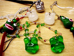
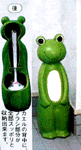
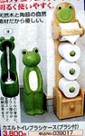
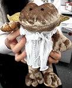
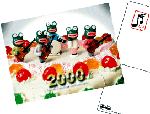

聖夜にカエルのモロー！ストラップが極秘追加発売！  【福岡発=モローの娘・弟子・りょうこ同志記者】第１期の分譲が大好評のうちに完売したモロー君の携帯ストラップを追加分譲を準備しています。今回は年末年始に照準を合わせて、デザインしました。あこがれの彼女への愛の告白などに使用して下さい。１７日に販売開始予定です。
【福岡発=モローの娘・弟子・りょうこ同志記者】第１期の分譲が大好評のうちに完売したモロー君の携帯ストラップを追加分譲を準備しています。今回は年末年始に照準を合わせて、デザインしました。あこがれの彼女への愛の告白などに使用して下さい。１７日に販売開始予定です。クリスマスの贈り物に最適です。間に合うように発送するので、速攻で申し込んで下さい！もちろんお年玉などにも喜ばれるはずです。今回は、限定７体です。 弟子りょうこの特製バージョンもあります。モローグッズの新製品開発の構想を練る、弟子りょうこ同志記者=写真右=と、けろ天市場の販促統括本部長ぴのこ同志記者=写真左=もお奨めする自信作です。 １７日になったら、けろテン市場に行ってみよう！ カエルにっこり、トイレにカエル！  【福岡発=ちび＆たーちゃんの母様】メルシーカタログショッピングを見ていたら、トイレ用品カエル３点セットを発見したので、取り急ぎ報告します。説明によると、『思わずニッコリ、トイレも明るく使いやすく』というコピーとともに、カエルトイレブラシケース（ブラシつき）３８００円。カエルボックス付ペーパーストッカー６３００円があったぞ。カエル製品だけに実用度は保証できそうです。
ケロ天市場出展を要請！【全国かえる奉賛会】素晴らしい！このような、実用感覚あふれるカエル製品を製造販売しているメルシーカタログショッピングの先見性には敬服するぞ。さーカエラーの諸君！イマスグに0586-46-1125に、トイレのカエル３点セットを申し込もう！天使のカエル入手！背中に羽根付き金色 【福岡発=しげやん同志記者】背中に天使の羽根が付いている金色のカエルぬいぐるみをゲットしました。『プレゼントですね』と、聞かれたので『はい』と答えました。おかげで、完全プレゼント包装してもらったんですが、ほんとは、自分のために買いました。たとえ彼女にもあげません！だって、可愛いんだから！【全国かえる奉賛会】ぐおーっ！！これは可愛い！こんな天使がいたら、もー大王様も彼女いらないなーっ！しげやんさんは、今年の聖夜を、このカエルとともに過ごせて、とっても幸福であるーっ！！
まるでネグリジェみたいな白いレースの洋服に、羽根が生えているんだよー。しげやんさん、どこで、いくらで連れてきたのか教えてくれーっ カエルのアートページを発見！【熊本発=kei-f同志記者】ネットをうろうろしていたら、素敵なページを見つけました。 http://www.kt.rim.or.jp/~pinpoint/japaneseindex.html ここから「art show」へすすんでください。カエルを題材にしたアート作品が並んでいます。長期間の展示を希望したいです。【全国かえる奉賛会】まるで、カエル新聞が主催してもよいテーマですねー。次回は、カエル新聞後援！にして、定期的にやってほしいです。  賀状はモロー２０００年記念カードで！【東京発=モロー寺井同志記者】２０００年記念カードのデザイン完成しました！先輩うしし氏が多忙の中仕上げてくれました。 ここものぞいてみてください。ナイスなキャラがいっぱいっす。１４日頃印刷があがる予定。よかったら年賀状などにおつかいいただければと思ってます。
今回は１枚１００円に値下げ、さらに１０枚以上購入で一割り引き。そして未使用画像からおまけカードもつけます！２０日までにはお届けできると思います。けろテン市場で発売中だ。 投稿採用者に武功カエル徽章を授与！ |
かえる古新聞過去に取り上げた記事を見出し付きで一覧したい人は、ここをクリック◆創刊号を見る◆先週号を見る◆話題の号を見る◆かえる新聞の昔を読む
|
私も入っています。。全国かえる奉賛会
大王様に会うには、このバナーをクリック。ずっと奥に写真館があるぞ。全国かえる奉賛会に入会するには、自分のホームページのどこかに、下の部分を追加するとバナーがリンク付きで表示されるぞ。どんどん入会しましょー |


|